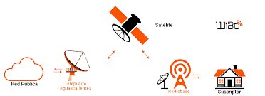

NETCONFIGPRO es una empresa especializada en proporcionar servicios de instalación y configuración de redes domésticas. Estamos comprometidos en brindar soluciones tecnológicas de alta calidad para mejorar la conectividad en el hogar.
Nuestra Misión
Nuestra misión es simplificar la vida de nuestros clientes al proporcionarles una red doméstica eficiente y confiable. Trabajamos incansablemente para garantizar que todos los dispositivos estén conectados y funcionando sin problemas.

Nuestros Servicios
- Instalación de redes Wi-Fi
- Configuración de enrutadores y dispositivos
- Resolución de problemas de red
- Asesoramiento en seguridad de red